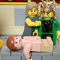
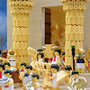

|
|
|
1 Kings 14
|
|
| 14:1
At that time Abijah the son of Jeroboam fell sick. |
God Plots Massacre, Kills Child
|
| 14:2
And Jeroboam said to his wife, Arise, I pray thee, and disguise thyself,
that thou be not known to be the wife of Jeroboam; and get thee to Shiloh:
behold, there is Ahijah the prophet, which told me that I should be king
over this people.
|
| 14:3
And take with thee ten loaves, and cracknels, and a cruse of honey, and go
to him: he shall tell thee what shall become of the child.
|
| 14:4
And Jeroboam's wife did so, and arose, and went to Shiloh, and came to the
house of Ahijah. But Ahijah could not see; for his eyes were set by reason
of his age. |
|
| 14:5
And the LORD said unto Ahijah, Behold, the wife of Jeroboam cometh to ask
a thing of thee for her son; for he is sick: thus and thus shalt thou say
unto her: for it shall be, when she cometh in, that she shall feign herself
to be another woman. |
|
| 14:6
And it was so, when Ahijah heard the sound of her feet, as she came in at
the door, that he said, Come in, thou wife of Jeroboam; why feignest thou
thyself to be another? for I am sent to thee with heavy tidings. |
|
| 14:7
Go, tell Jeroboam, Thus saith the LORD God of Israel, Forasmuch as I
exalted thee from among the people, and made thee prince over my people
Israel, |
|
| 14:8
And rent the kingdom away from the house of David, and gave it thee: and
yet thou hast not been as my servant David, who kept my commandments, and
who followed me with all his heart, to do that only which was right in mine
eyes; |

 (14:8) "Thou hast not been as my servant David, who kept my commandments, and
who followed me with all his heart, to do that only which was right in mine
eyes." (14:8) "Thou hast not been as my servant David, who kept my commandments, and
who followed me with all his heart, to do that only which was right in mine
eyes."
Everything that David did was right in the eyes of the Lord. (See
here for a sample of what
God considers "right".)
Did David sin?
(14:9)
"But [Jeroboam] hast done evil above all that were before thee."
Jeroboam did more evil than everyone who has ever lived.


 (14:10-11)
(14:10-11)
God promises to "bring evil upon the
house of Jerobaom," saying he will "cut off" anyone "that
pisseth against the wall." Then, after he is done with them, their
dead bodies will be eaten by dogs (if they are city dwellers) or fowls (if they are country folk).
What the Bible says about Evil
(14:10) "I will bring evil upon the house of Jeroboam,
and will cut off from Jeroboam him that pisseth against the wall."
(14:11) "Him that dieth of Jeroboam in the city shall the dogs eat; and him that dieth
in the field shall the fowls of the air eat: for the LORD hath spoken it."

 (14:12-17) Jeroboam's wife was worried about her sick son, so she went to see God's prophet.
Ahijah. He told her that God would kill her son to punish her husband. By the time she returned home, her son had died. (14:12-17) Jeroboam's wife was worried about her sick son, so she went to see God's prophet.
Ahijah. He told her that God would kill her son to punish her husband. By the time she returned home, her son had died.
(14:12) "When thy feet enter into the city, the child shall die."
(14:15) "For the LORD shall smite Israel ... because they have made their groves, provoking the LORD to anger."
|
| 14:9
But hast done evil above all that were before thee: for thou hast gone and
made thee other gods, and molten images, to provoke me to anger, and hast
cast me behind thy back:
|
| 14:10
Therefore, behold, I
will bring evil upon the house of Jeroboam, and will cut off from Jeroboam
him that pisseth against
the wall, and him that is shut up and left in Israel, and will take away
the remnant of the house of Jeroboam, as a man taketh away dung, till it be
all gone.
|
| 14:11
Him that dieth of
Jeroboam in the city shall the dogs eat; and him that dieth in the field
shall the fowls of the air eat: for the LORD hath spoken it.
|
| 14:12
Arise thou therefore, get thee to thine own house: and when thy feet enter
into the city, the child shall die.
|
| 14:13
And all Israel shall mourn for him, and bury him: for he only of Jeroboam
shall come to the grave, because in him there is found some good thing
toward the LORD God of Israel in the house of Jeroboam.
|
| 14:14
Moreover the LORD shall raise him up a king over Israel, who shall cut off
the house of Jeroboam that day: but what? even now.
|
| 14:15
For the LORD shall smite Israel, as a reed is shaken in the water, and he
shall root up Israel out of this good land, which he gave to their fathers,
and shall scatter them beyond the river, because they have made their
groves, provoking the LORD to anger.
|
| 14:16
And he shall give Israel up because of the sins of Jeroboam, who did sin,
and who made Israel to sin. |
|
| 14:17
And Jeroboam's wife arose, and departed, and came to Tirzah: and when she
came to the threshold of the door, the child died; |
(14:17)
"When she came to the threshold of the door, the child died."
To punish Jeroboam, God killed his son.
God's 88th Killing
|
| 14:18
And they buried him; and all Israel mourned for him, according to the word
of the LORD, which he spake by the hand of his servant Ahijah the prophet.
|
| 14:19
And the rest of the acts of Jeroboam, how he warred, and how he reigned,
behold, they are written in the book of the chronicles of the kings of
Israel. |
 (14:19) (14:19)
"Behold, they are written in the chronicles of the kings of Israel."
|
| 14:20
And the days which Jeroboam reigned were two and twenty years: and he
slept with his fathers, and Nadab his son reigned in his stead. |
|
| 14:21
And Rehoboam the son of Solomon reigned in Judah. Rehoboam was forty and
one years old when he began to reign, and he reigned seventeen years in
Jerusalem, the city which the LORD did choose out of all the tribes of
Israel, to put his name there. And his mother's name was Naamah an
Ammonitess. |
God Has Egypt Plunder Jerusalem
|
| 14:22
And Judah did evil in the sight of the LORD, and they provoked him to
jealousy with their sins which they had committed, above all that their
fathers had done.
|
| 14:23
For they also built them high places, and images, and groves, on every
high hill, and under every green tree. |
(14:23) "They also built them high places, and images, and groves, on every
high hill, and under every green tree."
During Rehoboam's reign, every tree had a shrine with a sacred stone and every hill an Asherah pole.
 (14:24) "There were also sodomites in the land: and they did according to
all the abominations of the nations which the LORD cast out before the children of Israel."
(14:24) "There were also sodomites in the land: and they did according to
all the abominations of the nations which the LORD cast out before the children of Israel."
God shows his homophobia by calling gay
people "sodomites" and their sexual relations "abominations."
|
| 14:24
And there were also
sodomites in the land: and they did according to all the abominations of the
nations which the LORD cast out before the children of Israel.
|
| 14:25
And it came to pass in the fifth year of king Rehoboam, that Shishak king
of Egypt came up against Jerusalem:
|
| 14:26
And he took away the treasures of the house of the LORD, and the treasures
of the king's house; he even took away all: and he took away all the shields
of gold which Solomon had made.
|
| 14:27
And king Rehoboam made in their stead brasen shields, and committed them
unto the hands of the chief of the guard, which kept the door of the king's
house. |
|
| 14:28
And it was so, when the king went into the house of the LORD, that the
guard bare them, and brought them back into the guard chamber. |
|
| 14:29
Now the rest of the acts of Rehoboam, and all that he did, are they not
written in the book of the chronicles of the kings of Judah? |
(14:29)
"Are they written in the chronicles of the kings of Judah?"
|
| 14:30
And there was war between Rehoboam and Jeroboam all their days.
|
| 14:31
And Rehoboam slept with his fathers, and was buried with his fathers in
the city of David. And his mother's name was Naamah an Ammonitess. And
Abijam his son reigned in his stead.
|
|
|